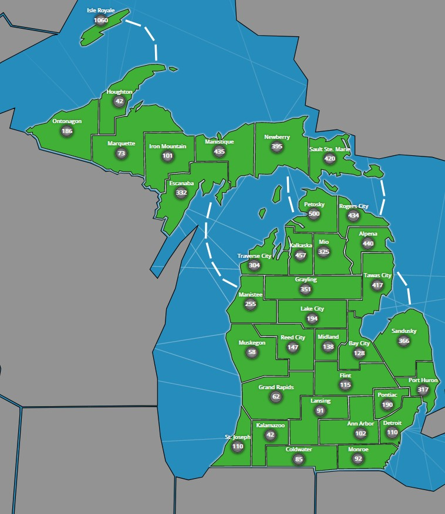
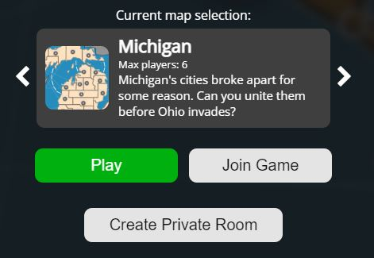
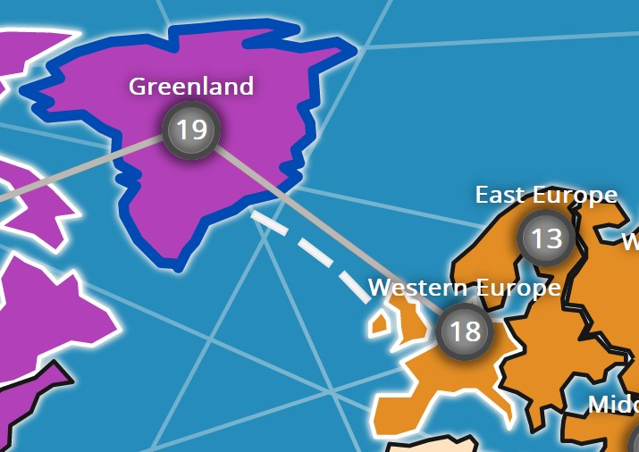
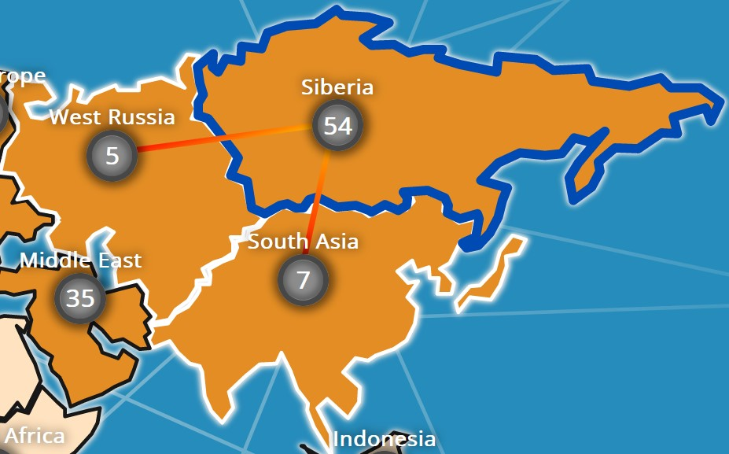
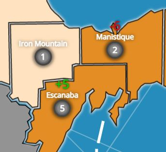

Thanks for playing Emblitz! Emblitz is an online fast-paced real time strategy game. Players can battle each other out on maps. Some maps include scale real-world places for you to fight over! The game mechanics are simple, but there's a lot of strategy involved. Good luck, and have fun playing!
Table of contents:
Objectives
The main objective of Emblitz is to conquer the world by capturing all the other players' territories and becoming the last person standing.
Controls
Before discussing the in-game controls, we first need to look at the home menu. Before joining a game, you can first enter a player name (a random name will be assigned if you don’t) and select a preferred color. The color will change your leaderboard and territory color, but will not affect gameplay and is purely cosmetic.
Looking past the username and player color inputs, we have the map selection menu. This will let you choose the type of map you want to play on. You may use the “<” and “>” buttons to navigate between maps. Each map is unique and has its own gameplay and strategies, and we’re going to be adding many more, so have fun exploring!
There are 3 buttons that are on the home menu. The green one is to join a random public room. The “Join Game” button allows you to join any room given the room code. The room code is displayed in the game lobby, which you may share with anyone you want. You may also create a private room using the “Create Private Room” button. This’ll create a room that only people with the join code can enter (perfect for playing challenge matches or bing chilling with friends). Once you’re in a lobby, the timer will start counting down when 2 or more players are in a game. Once the timer ends, or all players hit “Ready”, then the game starts.
The game controls themselves are fairly simple. In the deploy phase, simply tap on a territory to spawn. You may switch it as long as the deploy phase hasn’t ended. Once the attack phase starts, in order to move troops, you first select a territory that you own (same color as your leaderboard profile background). You’ll see a series of lines showing you where you can move troops to. Next, select a target territory that is highlighted. This’ll let you move troops to it (if it’s your own territory) or attack (if it’s an enemy or neutral territory). The slider bar on the bottom of the screen shows the percentage of troops that you are going to move, along with a bar showing the specific amount. You may adjust this bar according to your needs. Note that a minimum of 1 troop will always be sent, regardless of how low the percentage is (unless there are 0 troops). Finally, you may quit a game anytime by pressing the button on the far-bottom-left corner of the screen with a back arrow, but note that you’ll automatically be defeated if you leave the game.
Game Mechanics
  Main game mechanics in Emblitz include warfare-related functions, such as defending and attacking. The controls for both are mentioned in the “game controls” section. A number reflecting troop number changes will pop up above a territory label every time its troop amount changes.
Defending allows you to fortify existing territories to better prepare for an enemy attack. Defending troops receive a 20% boost over the attacking troops, so it’ll cost an attacking enemy more troops than you if one of your territories is attacked.
Attacking allows you to seize other players’ territories and win the game, once you’re the last person standing. All players start out with 10 troops. Every 10 seconds, all territories for all players will gain troops. There’s a timer on the top left corner of the screen so you know when that addition occurs. Territories will gain 1 troop per addition, plus 20% of their current troop count, up to a maximum of 5 troops per 10 seconds. As a result, it may be advantageous to accumulate a large number of troops in certain territories to maximize the benefits of this mechanic. However, it'll also be beneficial to control a lot of territories, since each one has its own troop bonuses.
Player Interactions
We're still working on player interaction features, but we hope to add player emotes and preset messages in the future to encourage player collaboration and interaction.
Frequently Asked Questions (FAQs)
Will there be new maps? How about new game content?
Maps are released frequently, so stay tuned for more maps! We're also rolling out updates as well, since this game is very early in development and we look forward to making more stuff in-game! We also plan on adding user accounts so you can change your profile pic and save your stats and settings.
What's with the glitches?
We are currently aware of several glitches, mostly client-side ones that don't impact gameplay significantly. However, we are doing our best to fix them. Note that we're in early alpha, so this game is still a work in progress.
How do I contact the devs, and is there a community?
We're working on an Emblitz Discord server, and we'll post the link when we're finished.
Why can't I play on mobile?
Mobile phones have touchscreens and have smaller screens in general, which currently isn't very compatible with the current system. We're working on a special version though for users who play on mobile, and it'll be done soon!
Will there be ads in the game?
As the game just released, we haven't put ads on yet. However, we plan on adding ads to help cover hosting costs. Furthermore, we plan on donating most of the profits to a local nonprofit that's dedicated towards providing free bikes for children in need. So, once there are ads, we'll really appreciate it if you disable your adblocker (if you have one)!
Who are the devs?
We're just 2 high school students who like making cool stuff and helping out others at the same time.
© Emblitz 2022